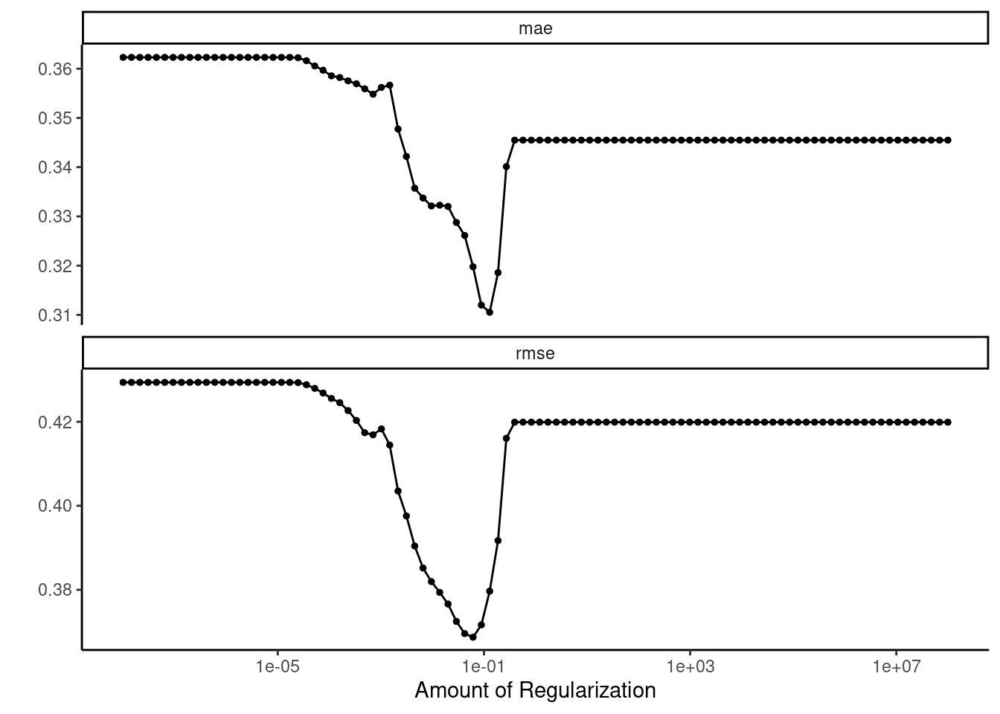

Sección 8 Caso Práctico Modelo QSAR: Regresión Lineal Múltiple
Este caso práctico se enfoca en la construcción de un modelo QSAR (Análisis Cuantitativo de Relación Estructura-Actividad) mediante regresión lineal múltiple (MLR). Los datos de partida se obtuvieron del artículo titulado “QSAR Study of (5-Nitroheteroaryl-1,3,4-Thiadiazole-2-yl) Piperazinyl Derivatives to Predict New Similar Compounds as Antileishmanial Agents”. En dicho artículo, se llevaron a cabo estudios QSAR que incluyeron análisis de componentes principales (PCA), regresión lineal múltiple (MLR), regresión no lineal (RNLM) y cálculos de redes neuronales artificiales (ANN) en una serie de 36 compuestos derivados de (5-Nitroheteroaryl-1,3,4-Thiadiazole-2-yl) Piperazinyl. El objetivo principal era identificar las características estructurales clave necesarias para diseñar nuevos candidatos potentes de esta clase para la actividad antileishmanial.
En este caso práctico, nos proponemos comparar los resultados obtenidos en nuestro ejercicio con los del mencionado artículo, en especial con en el método de regresión lineal múltiple.
La estructura de este caso práctico se dividirá en las siguientes secciones: recopilación de datos, descripción de descriptores moleculares, construcción del modelo, validación del modelo y comparación de resultados.
En el artículo se realizaron múltiples regresiones lineales utilizando el software XLSTAT versión 2013 para predecir los efectos sobre la actividad antileishmania. Nosotros implementaremos el desarrollo del modelo utilizando Rstudio con tidymodels.
## ── Attaching packages ────────────────────────────────────── tidymodels 1.1.1 ──## ✔ broom 1.0.5 ✔ recipes 1.0.8
## ✔ dials 1.2.0 ✔ rsample 1.2.0
## ✔ dplyr 1.1.3 ✔ tibble 3.2.1
## ✔ ggplot2 3.4.3 ✔ tidyr 1.3.0
## ✔ infer 1.0.5 ✔ tune 1.1.2
## ✔ modeldata 1.2.0 ✔ workflows 1.1.3
## ✔ parsnip 1.1.1 ✔ workflowsets 1.0.1
## ✔ purrr 1.0.2 ✔ yardstick 1.2.0## ── Conflicts ───────────────────────────────────────── tidymodels_conflicts() ──
## ✖ purrr::discard() masks scales::discard()
## ✖ dplyr::filter() masks stats::filter()
## ✖ dplyr::lag() masks stats::lag()
## ✖ recipes::step() masks stats::step()
## • Use tidymodels_prefer() to resolve common conflicts.##
## Attaching package: 'readr'## The following object is masked from 'package:yardstick':
##
## spec## The following object is masked from 'package:scales':
##
## col_factorlibrary(broom)
library(ggplot2)
tidymodels_prefer() # Resuelve conflictos, prefiere funciones tidymodel
set.seed(123) Datos
- Fuente de datos
La información sobre la actividad antileishmanial experimental (\(pIC_{50}\) en μM) de 36 derivados de tiadiazol se ha recopilado de un estudio previo. Cabe destacar que los valores de \(pIC_{50}\) para las 30 moléculas que componen el conjunto de entrenamiento del modelo oscilan en un rango que va desde 3,155 y 5,046. Los detalles sobre las moléculas y sus respectivas actividades biológicas calculadas experimentalmente (\(pIC_{50}\)) se presentan mas adelante.
Descriptores moleculares
- Generación de descriptores
Para calcular los descriptores electrónicos, los autores emplearon el paquete Gaussian03. Las geometrías de los 36 derivados de tiadiazol se optimizaron mediante el método DFT (Teoría del Funcional de Densidad), una técnica teórica en química computacional utilizada para calcular propiedades electrónicas de las moléculas. Estos cálculos se realizaron utilizando el conjunto funcional B3LYP, que define las interacciones electrónicas en las moléculas, y la base 6-31G (d), un conjunto de funciones de base utilizado para aproximar las funciones de onda electrónica en los cálculos de DFT. Estos cálculos proporcionaron varios descriptores estructurales clave, incluyendo la energía orbital molecular ocupada más alta (HOMO), la energía orbital molecular desocupada más baja (LUMO), el momento dipolar (μ), la brecha de energía (ΔE) y la energía total.
Por otro lado, para calcular una serie de descriptores moleculares adicionales, como el volumen molar MV (cm³), el peso molecular MW (g/mol), la refractividad molar MR (cm³), el parachor Pc (cm³), la densidad D (g/cm³), el índice de refracción n y el coeficiente de partición octanol/agua (logP), se utilizó el programa ChemSketch. Los valores de los 12 descriptores químicos calculados se presentan en la siguiente tabla junto con sus respectivas actividades biológicas calculadas experimentalmente (\(pIC_{50}\)).
# Cargar datos con los valores de los parametros (descriptores)
Valores_Parametros_Tiadiazoles <- read_xlsx("Valores_Parametros_Tiadiazoles.xlsx")
Valores_Parametros_Tiadiazoles## # A tibble: 36 × 14
## N pIC50 MW MR MV Pc n D Et Ehomo Elumo DeltaE
## <dbl> <dbl> <dbl> <dbl> <dbl> <dbl> <dbl> <dbl> <dbl> <dbl> <dbl> <dbl>
## 1 1 4.93 385. 97.7 266. 36.6 1.66 1.45 -44405. -6.59 -2.84 3.75
## 2 2 4.97 420. 103. 278. 34.4 1.66 1.51 -56919. -6.7 -2.85 3.85
## 3 3 4.88 420. 103. 278. 34.4 1.66 1.51 -56919. -6.41 -2.92 3.49
## 4 4 4.58 420. 103. 278. 34.4 1.66 1.51 -56920. -6.69 -2.88 3.82
## 5 5 4.72 391. 96.0 255. 42.8 1.68 1.53 -53139. -6.38 -3.08 3.3
## 6 6 4.92 426. 101. 267 40.1 1.68 1.59 -65654. -6.7 -2.88 3.82
## 7 7 4.88 470. 104. 271. 46.0 1.69 1.73 -123150. -6.65 -2.87 3.78
## 8 8 4.60 401. 104. 272. 36.7 1.69 1.47 -53199. -6.37 -2.48 3.89
## 9 9 4.46 436. 109. 284. 34.5 1.69 1.53 -65714. -6.69 -2.93 3.76
## 10 10 4.22 436. 109. 284. 34.5 1.69 1.53 -65714. -6.7 -2.96 3.74
## # ℹ 26 more rows
## # ℹ 2 more variables: mu <dbl>, logP <dbl>La columna “N” en los datos originales es un identificador. Por ahora no la necesitamos.
# Crear un nuevo conjunto de datos sin la columna "N"
Valores_Parametros_Tiadiazoles_SID <- Valores_Parametros_Tiadiazoles %>%
select(-N)
# Tibble con los datos
data <- Valores_Parametros_Tiadiazoles_SID %>%
as_tibble()
# Análisis de las variables
glimpse(data)## Rows: 36
## Columns: 13
## $ pIC50 <dbl> 4.932, 4.969, 4.880, 4.581, 4.717, 4.921, 4.882, 4.602, 4.463, …
## $ MW <dbl> 385.40, 419.84, 419.84, 419.84, 391.42, 425.87, 470.32, 401.46,…
## $ MR <dbl> 97.67, 102.56, 102.56, 102.56, 96.05, 100.95, 103.74, 103.75, 1…
## $ MV <dbl> 265.6, 277.5, 277.5, 277.5, 255.1, 267.0, 271.2, 272.3, 284.2, …
## $ Pc <dbl> 36.597, 34.399, 34.399, 34.399, 42.830, 40.057, 46.026, 36.730,…
## $ n <dbl> 1.66, 1.66, 1.66, 1.66, 1.68, 1.68, 1.69, 1.69, 1.69, 1.69, 1.6…
## $ D <dbl> 1.45, 1.51, 1.51, 1.51, 1.53, 1.59, 1.73, 1.47, 1.53, 1.53, 1.5…
## $ Et <dbl> -44404.76, -56919.44, -56919.28, -56919.54, -53138.85, -65653.5…
## $ Ehomo <dbl> -6.59, -6.70, -6.41, -6.69, -6.38, -6.70, -6.65, -6.37, -6.69, …
## $ Elumo <dbl> -2.84, -2.85, -2.92, -2.88, -3.08, -2.88, -2.87, -2.48, -2.93, …
## $ DeltaE <dbl> 3.75, 3.85, 3.49, 3.82, 3.30, 3.82, 3.78, 3.89, 3.76, 3.74, 3.7…
## $ mu <dbl> 3.04, 3.77, 5.40, 2.20, 7.55, 5.74, 6.74, 3.56, 6.05, 5.57, 4.3…
## $ logP <dbl> 1.844, 2.402, 2.402, 2.402, 1.825, 2.199, 2.534, 3.210, 3.768, …Construccion del modelo
- División de datos para nuestro caso práctico
Los investigadores dividieron el conjunto de datos aleatoriamente en dos grupos: un conjunto de entrenamiento, que consta de treinta moléculas, se utilizó para construir el modelo cuantitativo. Las moléculas restantes (2, 3, 10, 11, 17 y 18) se reservaron para evaluar el rendimiento del modelo propuesto en un conjunto de prueba.
En nuestro caso, la división de los datos también se realizará de forma aleatoria, como se muestra a continuación:
# Establecer método de selección de datos de forma aleatoria
# Establecer 80% de los datos en el conjunto de entrenamiento
data_split <- initial_split(data, prop = 0.85)
# Mostrar objeto con información sobre la partición
data_split## <Training/Testing/Total>
## <30/6/36># Para obtener los conjuntos de datos resultantes
data_train <- training(data_split)
data_test <- testing(data_split)
# Para obtener los conjuntos de datos resultantes
#data_train <- read_xlsx("Set_Entrenamiento.xlsx")
#data_test <- read_xlsx("Set_Prueba.xlsx")
# Mostrar dimensiones (número de filas y columnas)
dim(data_train)## [1] 30 13## [1] 6 13En el artículo, los investigadores utilizaron los descriptores obtenidos para desarrollar un modelo lineal con el propósito de predecir los efectos de los sustituyentes sobre la actividad antileishmania de 30 derivados de tiadiazol (conjunto de entrenamiento) mediante la selección hacia atrás en el MLR. La mejor combinación lineal obtenida incluye tres descriptores seleccionados: la energía Elumo, la energía Ehomo y el coeficiente de partición octanol/agua logP. Las ecuaciones de los modelos se justifican principalmente por el coeficiente de correlación (R), el error cuadrático medio (MSE), la estadística F de Fisher y el nivel de significancia (valor p).
En nuestro caso práctico, optamos por realizar el análisis y desarrollo del modelo directamente en RStudio, una plataforma ampliamente utilizada para estadísticas y análisis de datos.
- Generación modelo MLR
#parsnip_addin()
# Modelo y motor
lm_model <-
linear_reg() %>%
set_engine("lm")
# Flujo de trabajo
lm_wflow <-
workflow() %>%
add_model(lm_model) %>%
add_variables(outcome = pIC50, predictors = c(Ehomo, Elumo, logP))
# Ajuste del modelo al conjunto de entrenamiento
lm_fit <-
fit(lm_wflow, data_train)
lm_fit## ══ Workflow [trained] ══════════════════════════════════════════════════════════
## Preprocessor: Variables
## Model: linear_reg()
##
## ── Preprocessor ────────────────────────────────────────────────────────────────
## Outcomes: pIC50
## Predictors: c(Ehomo, Elumo, logP)
##
## ── Model ───────────────────────────────────────────────────────────────────────
##
## Call:
## stats::lm(formula = ..y ~ ., data = data)
##
## Coefficients:
## (Intercept) Ehomo Elumo logP
## 2.8797 -0.4983 0.7101 0.1732- Para comparar con este modelo lineal, también podemos ajustar un tipo diferente de modelo. Por ejemplo un modelo bosque aleatorio:
rf_model <-
rand_forest(trees = 1000) %>%
set_engine("ranger") %>%
set_mode("regression")
rf_wflow <-
workflow() %>%
add_variables(outcome = pIC50, predictors = c(Ehomo, Elumo, logP)) %>%
add_model(rf_model)
rf_fit <-
rf_wflow %>%
fit(data = data_train)
rf_fit## ══ Workflow [trained] ══════════════════════════════════════════════════════════
## Preprocessor: Variables
## Model: rand_forest()
##
## ── Preprocessor ────────────────────────────────────────────────────────────────
## Outcomes: pIC50
## Predictors: c(Ehomo, Elumo, logP)
##
## ── Model ───────────────────────────────────────────────────────────────────────
## Ranger result
##
## Call:
## ranger::ranger(x = maybe_data_frame(x), y = y, num.trees = ~1000, num.threads = 1, verbose = FALSE, seed = sample.int(10^5, 1))
##
## Type: Regression
## Number of trees: 1000
## Sample size: 30
## Number of independent variables: 3
## Mtry: 1
## Target node size: 5
## Variable importance mode: none
## Splitrule: variance
## OOB prediction error (MSE): 0.1910696
## R squared (OOB): 0.1699489Validación interna
- Enfoque de resustitución
Cuando medimos el rendimiento con los mismos datos que utilizamos para el entrenamiento (a diferencia de datos nuevos o datos de prueba), decimos que hemos resustituido los datos.
# Definir la función estimate_perf modificada
estimate_perf <- function(model, dat) {
# Capturar los nombres de los objetos `model` y `dat`
cl <- match.call() # Captura la llamada a la función y sus argumentos
obj_name <- as.character(cl$model) # Obtiene el nombre del objeto 'model' como texto
data_name <- as.character(cl$dat) # Obtiene el nombre del objeto 'dat' como texto
# Calcular métricas:
reg_metrics <- metric_set(rmse, rsq) # Error cuadrático medio y coeficiente de determinación
model %>%
predict(dat) %>% # Realiza predicciones del modelo en el conjunto de datos 'dat'
bind_cols(dat %>% select(pIC50)) %>% # Combina las predicciones con la columna 'pIC50' del conjunto de datos
reg_metrics(pIC50, .pred) %>% # Calcula las métricas RMSE y RSQ usando 'pIC50' como verdad y '.pred' como estimaciones
select(-.estimator) %>% # Elimina la columna '.estimator' generada durante el cálculo de las métricas
mutate(object = obj_name, data = data_name) # Agrega las columnas 'object' y 'data' con los nombres de los objetos
}Tanto RMSE como \(R^{2}\) se calculan. Las estadísticas de resustitución son:
## # A tibble: 2 × 4
## .metric .estimate object data
## <chr> <dbl> <chr> <chr>
## 1 rmse 0.351 lm_fit data_train
## 2 rsq 0.447 lm_fit data_train## # A tibble: 2 × 4
## .metric .estimate object data
## <chr> <dbl> <chr> <chr>
## 1 rmse 0.222 rf_fit data_train
## 2 rsq 0.891 rf_fit data_trainEn base a estos resultados, el bosque aleatorio es mucho más capaz de predecir.
Apliquemos el modelo de regresion lineal y bosque aleatorio al conjunto de prueba:
## # A tibble: 2 × 4
## .metric .estimate object data
## <chr> <dbl> <chr> <chr>
## 1 rmse 0.265 lm_fit data_test
## 2 rsq 0.680 lm_fit data_test## # A tibble: 2 × 4
## .metric .estimate object data
## <chr> <dbl> <chr> <chr>
## 1 rmse 0.288 rf_fit data_test
## 2 rsq 0.131 rf_fit data_testEl modelo de regresión lineal es mas consistente entre el entrenamiento y las pruebas. Por otro lado, el modelo de bosque aleatorio parece funcionar mucho mejor en los datos con los que se entrenó que en datos de prueba, su discrepancia en el rendimiento entre el conjunto de entrenamiento y el conjunto de prueba puede deberse a la capacidad del modelo para adaptarse a patrones complejos en los datos de entrenamiento, pero esto no garantiza que funcione igual de bien en datos nuevos o desconocidos. Esto es un ejemplo de un posible problema de sobreajuste (overfitting), donde el modelo se ajusta demasiado a los datos de entrenamiento y no generaliza bien a nuevos datos.
Al repredecir los datos del conjunto de entrenamiento, la estimación de rendimiento parece demasiado optimista y no es representativa del rendimiento real del modelo. Esto no es recomendable para la mayoría de los modelos.
Tampoco debemos usar directamente los datos de prueba de principio. Entonces, si no debemos usar directamente los datos de prueba ni repredecir las predicciones en el conjunto de entrenamiento, la solución está en utilizar métodos de remuestreo, como la validación cruzada o los conjuntos de validación. Estos métodos nos permiten obtener una evaluación más precisa y realista del rendimiento de nuestro modelo sin caer en la trampa de la sobreajuste que se produce al repredecir el conjunto de entrenamiento.
- Método de remuestreo
Los métodos de remuestreo son técnicas que simulan cómo se utiliza un conjunto de datos para entrenar y evaluar un modelo. La mayoría de los métodos de remuestreo son iterativos, lo que significa que este proceso se repite varias veces. Para cada iteración de remuestreo, los datos se dividen en dos submuestras:
- Se entrena el modelo con una parte de los datos.
- Se evalúa el modelo con la otra parte de los datos.
Estas partes son similares a los conjuntos de entrenamiento y prueba. Nos permite determinar qué tan bien funciona el modelo sin utilizar el conjunto de prueba.
- Método de remuestreo con validación cruzada
La validación cruzada es una técnica fundamental en el aprendizaje automático que mejora la evaluación de modelos al dividir los datos en varios subconjuntos y realizar ciclos de entrenamiento y evaluación. Esto proporciona una evaluación más sólida del rendimiento del modelo y su capacidad de adaptación a nuevos datos.
La elección de un número adecuado de “pliegues” es crucial. Un mayor número de pliegues da como resultado estimaciones con un sesgo pequeño pero con una varianza considerable. En cambio, un menor número de pliegues introduce un sesgo mayor pero con una variación más baja. En este caso, tomamos un valor de 10, ya que la replicación reduce el ruido, pero no el sesgo.
La función vfold_cves útil para la validación cruzada. Estratifica los pliegues para clases equilibradas, pero también funciona en problemas numéricos. vfold_cv puede ser utilizado para crear una validación cruzada estratificada en problemas de regresión o predicción numérica, aunque la estratificación se basará en los valores numéricos en lugar de clases.
## # 10-fold cross-validation
## # A tibble: 10 × 2
## splits id
## <list> <chr>
## 1 <split [27/3]> Fold01
## 2 <split [27/3]> Fold02
## 3 <split [27/3]> Fold03
## 4 <split [27/3]> Fold04
## 5 <split [27/3]> Fold05
## 6 <split [27/3]> Fold06
## 7 <split [27/3]> Fold07
## 8 <split [27/3]> Fold08
## 9 <split [27/3]> Fold09
## 10 <split [27/3]> Fold10## [1] 27 1325 muestras están en el conjunto de análisis y 13 están en ese conjunto de evaluación en particular.
Guardemos las predicciones para visualizar el ajuste y los residuos del modelo:
keep_pred <- control_resamples(save_pred = TRUE, save_workflow = TRUE)
#De esta manera, tanto lm_res como rf_res contendrán las predicciones y flujos de trabajo para sus respectivos modelos, pero ambos utilizarán el mismo objeto keep_pred.#Modelo regresion lineal
lm_res <-
lm_wflow %>%
fit_resamples(resamples = data_folds, control = keep_pred)
lm_res## # Resampling results
## # 10-fold cross-validation
## # A tibble: 10 × 5
## splits id .metrics .notes .predictions
## <list> <chr> <list> <list> <list>
## 1 <split [27/3]> Fold01 <tibble [2 × 4]> <tibble [0 × 3]> <tibble [3 × 4]>
## 2 <split [27/3]> Fold02 <tibble [2 × 4]> <tibble [0 × 3]> <tibble [3 × 4]>
## 3 <split [27/3]> Fold03 <tibble [2 × 4]> <tibble [0 × 3]> <tibble [3 × 4]>
## 4 <split [27/3]> Fold04 <tibble [2 × 4]> <tibble [0 × 3]> <tibble [3 × 4]>
## 5 <split [27/3]> Fold05 <tibble [2 × 4]> <tibble [0 × 3]> <tibble [3 × 4]>
## 6 <split [27/3]> Fold06 <tibble [2 × 4]> <tibble [0 × 3]> <tibble [3 × 4]>
## 7 <split [27/3]> Fold07 <tibble [2 × 4]> <tibble [0 × 3]> <tibble [3 × 4]>
## 8 <split [27/3]> Fold08 <tibble [2 × 4]> <tibble [0 × 3]> <tibble [3 × 4]>
## 9 <split [27/3]> Fold09 <tibble [2 × 4]> <tibble [0 × 3]> <tibble [3 × 4]>
## 10 <split [27/3]> Fold10 <tibble [2 × 4]> <tibble [0 × 3]> <tibble [3 × 4]>## # A tibble: 2 × 6
## .metric .estimator mean n std_err .config
## <chr> <chr> <dbl> <int> <dbl> <chr>
## 1 rmse standard 0.398 10 0.0422 Preprocessor1_Model1
## 2 rsq standard 0.728 10 0.103 Preprocessor1_Model1#Modelo bosque aleatorio
rf_res <-
rf_wflow %>%
fit_resamples(resamples = data_folds, control = keep_pred)
rf_res## # Resampling results
## # 10-fold cross-validation
## # A tibble: 10 × 5
## splits id .metrics .notes .predictions
## <list> <chr> <list> <list> <list>
## 1 <split [27/3]> Fold01 <tibble [2 × 4]> <tibble [0 × 3]> <tibble [3 × 4]>
## 2 <split [27/3]> Fold02 <tibble [2 × 4]> <tibble [0 × 3]> <tibble [3 × 4]>
## 3 <split [27/3]> Fold03 <tibble [2 × 4]> <tibble [0 × 3]> <tibble [3 × 4]>
## 4 <split [27/3]> Fold04 <tibble [2 × 4]> <tibble [0 × 3]> <tibble [3 × 4]>
## 5 <split [27/3]> Fold05 <tibble [2 × 4]> <tibble [0 × 3]> <tibble [3 × 4]>
## 6 <split [27/3]> Fold06 <tibble [2 × 4]> <tibble [0 × 3]> <tibble [3 × 4]>
## 7 <split [27/3]> Fold07 <tibble [2 × 4]> <tibble [0 × 3]> <tibble [3 × 4]>
## 8 <split [27/3]> Fold08 <tibble [2 × 4]> <tibble [0 × 3]> <tibble [3 × 4]>
## 9 <split [27/3]> Fold09 <tibble [2 × 4]> <tibble [0 × 3]> <tibble [3 × 4]>
## 10 <split [27/3]> Fold10 <tibble [2 × 4]> <tibble [0 × 3]> <tibble [3 × 4]>## # A tibble: 2 × 6
## .metric .estimator mean n std_err .config
## <chr> <chr> <dbl> <int> <dbl> <chr>
## 1 rmse standard 0.402 10 0.0532 Preprocessor1_Model1
## 2 rsq standard 0.699 10 0.0956 Preprocessor1_Model1En este caso, las estimaciones de desempeño son mas realistas que las estimaciones de resustitución.
Para obtener las predicciones del conjunto de evaluación:
## # A tibble: 30 × 5
## id .pred .row pIC50 .config
## <chr> <dbl> <int> <dbl> <chr>
## 1 Fold01 4.26 1 4.02 Preprocessor1_Model1
## 2 Fold01 4.00 11 3.22 Preprocessor1_Model1
## 3 Fold01 4.29 20 4.48 Preprocessor1_Model1
## 4 Fold02 4.83 5 4.22 Preprocessor1_Model1
## 5 Fold02 4.82 8 4.62 Preprocessor1_Model1
## 6 Fold02 4.28 30 4.96 Preprocessor1_Model1
## 7 Fold03 4.12 9 4.72 Preprocessor1_Model1
## 8 Fold03 4.88 17 4.60 Preprocessor1_Model1
## 9 Fold03 4.72 29 4.62 Preprocessor1_Model1
## 10 Fold04 4.54 18 4.88 Preprocessor1_Model1
## # ℹ 20 more rows## # A tibble: 30 × 5
## id .pred .row pIC50 .config
## <chr> <dbl> <int> <dbl> <chr>
## 1 Fold01 4.42 1 4.02 Preprocessor1_Model1
## 2 Fold01 4.27 11 3.22 Preprocessor1_Model1
## 3 Fold01 4.72 20 4.48 Preprocessor1_Model1
## 4 Fold02 4.52 5 4.22 Preprocessor1_Model1
## 5 Fold02 4.51 8 4.62 Preprocessor1_Model1
## 6 Fold02 4.45 30 4.96 Preprocessor1_Model1
## 7 Fold03 4.18 9 4.72 Preprocessor1_Model1
## 8 Fold03 4.64 17 4.60 Preprocessor1_Model1
## 9 Fold03 4.46 29 4.62 Preprocessor1_Model1
## 10 Fold04 4.60 18 4.88 Preprocessor1_Model1
## # ℹ 20 more rows- Validación externa
Los compuestos del conjunto de prueba no se utilizan en el entrenamiento del modelo QSAR y, por lo tanto, se emplean en el procedimiento de validación externa.
#Modelo regresion lineal
data_test_res_lm <- predict(lm_fit, new_data = data_test %>% select(-pIC50))
data_test_res_lm## # A tibble: 6 × 1
## .pred
## <dbl>
## 1 4.61
## 2 4.55
## 3 4.55
## 4 4.50
## 5 4.42
## 6 4.27#Modelo bosque aleatorio
data_test_res_rf <- predict(rf_fit, new_data = data_test %>% select(-pIC50))
data_test_res_rf## # A tibble: 6 × 1
## .pred
## <dbl>
## 1 4.62
## 2 4.59
## 3 4.68
## 4 4.64
## 5 4.51
## 6 4.66El resultado numérico previsto por el modelo de regresión se denomina “.pred”. Comparando los valores predichos con sus correspondientes valores de resultado observados:
#Modelo regresion lineal
data_test_res_lm <- bind_cols(data_test_res_lm, data_test %>% select(pIC50))
data_test_res_lm## # A tibble: 6 × 2
## .pred pIC50
## <dbl> <dbl>
## 1 4.61 4.97
## 2 4.55 4.92
## 3 4.55 4.69
## 4 4.50 4.75
## 5 4.42 4.14
## 6 4.27 4.32#Modelo bosque aleatorio
data_test_res_rf <- bind_cols(data_test_res_rf, data_test %>% select(pIC50))
data_test_res_rf## # A tibble: 6 × 2
## .pred pIC50
## <dbl> <dbl>
## 1 4.62 4.97
## 2 4.59 4.92
## 3 4.68 4.69
## 4 4.64 4.75
## 5 4.51 4.14
## 6 4.66 4.32Calculando métricas:
#Modelo regresion lineal
data_metrics_lm <- metric_set(rmse, rsq, mae)
data_metrics_lm(data_test_res_lm, truth = pIC50, estimate = .pred)## # A tibble: 3 × 3
## .metric .estimator .estimate
## <chr> <chr> <dbl>
## 1 rmse standard 0.265
## 2 rsq standard 0.680
## 3 mae standard 0.238#Modelo bosque aleatorio
data_metrics_rf <- metric_set(rmse, rsq, mae)
data_metrics_rf(data_test_res_rf, truth = pIC50, estimate = .pred)## # A tibble: 3 × 3
## .metric .estimator .estimate
## <chr> <chr> <dbl>
## 1 rmse standard 0.288
## 2 rsq standard 0.131
## 3 mae standard 0.252Un buen valor de rsq (coeficiente de correlación) en la validacion cruzada de diez indica que el modelo tiene robustez y alto poder predictivo interno en el conjunto de datos utilizado. Un valor de rsq superior a 0,5 es el criterio básico para calificar un modelo como válido. Entonces, un elevado coeficiente de correlación (rsq) y un bajo error cuadrático medio (rmse) son indicativos de la confiabilidad del modelo QSAR.
- Modelo Lasso
# Modelo lasso
lm_lasso_spec <-
linear_reg() %>%
set_args(mixture = 1, penalty = 0) %>% #Configura los argumentos del modelo: mixture = 1 indica Lasso
set_engine(engine = 'glmnet') %>% #
set_mode('regression')
# Recipe
data_rec <- recipe( pIC50 ~ . , data = data) %>%
step_nzv(all_predictors()) %>%
step_normalize(all_numeric_predictors()) # Realiza la estandarización de las variables numéricas
# Flujo de trabajo
lasso_wf <- workflow() %>%
add_recipe(data_rec) %>%
add_model(lm_lasso_spec)
# Ajustar el modelo a los datos
lasso_fit <- lasso_wf %>%
fit(data = data) # Fit to dataGráfico que muestra cómo cambian los coeficientes del modelo Lasso a medida que varía el valor de penalización (lambda)
plot(lasso_fit %>% extract_fit_parsnip() %>% pluck('fit'), # way to get the original glmnet output
xvar = "lambda")
A medida que aumenta el valor de penalzación (lambda) aumenta, el modelo penaliza más los coeficientes no importantes, lo que lleva a coeficientes más pequeños y, en última instancia, a la selección de características relevantes.
Para identificar el mejor modelo, debemos ajustar el modelo mediante validación cruzada.
# Método de remuestreo con validación cruzada estratificada
data_cv10 <- vfold_cv(data, v = 10)
# Modelo lasso
lm_lasso_spec <-
linear_reg() %>%
set_args(mixture = 1, penalty = 0) %>% #Configura los argumentos del modelo: mixture = 1 indica Lasso
set_engine(engine = 'glmnet') %>% #
set_mode('regression')
# Modelo Lasso con "tune"
lm_lasso_spec_tune <-
linear_reg() %>%
set_args(mixture = 1, penalty = tune()) %>% # "tune"permite buscar y seleccionar el valor óptimo de los hiperparámetros
set_engine(engine = 'glmnet') %>%
set_mode('regression')
# Workflow con "tune"
lasso_wf_tune <- workflow() %>%
add_recipe(data_rec) %>%
add_model(lm_lasso_spec_tune)
# Sintonizar Modelo (probando una variedad de valores de penalización Lambda)
penalty_grid <- grid_regular(
penalty(range = c(-8, 8)), #transformado logarítmicamente de 10^-8 a 10^8
levels = 100) # La cuadrícula incluye 100 valores que abarcan un rango logarítmico de -8 a 8.
tune_res <- tune_grid(
lasso_wf_tune,
resamples = data_cv10,
metrics = metric_set(rmse, mae),
grid = penalty_grid
)
# Visualizar Métricas de Evaluación del Modelo durante la Sintonización
autoplot(tune_res) + theme_classic() # Se visualizan las métricas de evaluación del modelo en función de los diferentes valores de penalización utilizando un gráfico
# Resumir métricas de Evaluación del Modelo
collect_metrics(tune_res) %>%
filter(.metric == 'rmse') %>%
select(penalty, rmse = mean) # Esta parte resume las métricas de evaluación del modelo y selecciona el valor de penalización óptimo basado en el error cuadrático medio (rmse) más bajo.## # A tibble: 100 × 2
## penalty rmse
## <dbl> <dbl>
## 1 0.00000001 0.429
## 2 0.0000000145 0.429
## 3 0.0000000210 0.429
## 4 0.0000000305 0.429
## 5 0.0000000443 0.429
## 6 0.0000000643 0.429
## 7 0.0000000933 0.429
## 8 0.000000135 0.429
## 9 0.000000196 0.429
## 10 0.000000285 0.429
## # ℹ 90 more rowsbest_penalty <- select_best(tune_res, metric = 'rmse') # se selecciona el valor de penalización óptimo basado en el rmse más bajo.
# Ajustar modelo final con el valor óptimo de penalización y el flujo de trabajo definido
final_wf <- finalize_workflow(lasso_wf_tune, best_penalty)
# Se entrena en todos los datos
final_fit <- fit(final_wf, data = data)
tidy(final_fit)## # A tibble: 13 × 3
## term estimate penalty
## <chr> <dbl> <dbl>
## 1 (Intercept) 4.51 0.0614
## 2 MW 0 0.0614
## 3 MR 0 0.0614
## 4 MV 0 0.0614
## 5 Pc 0 0.0614
## 6 n 0 0.0614
## 7 D 0 0.0614
## 8 Et 0 0.0614
## 9 Ehomo 0 0.0614
## 10 Elumo 0.000782 0.0614
## 11 DeltaE 0.199 0.0614
## 12 mu 0 0.0614
## 13 logP 0.0719 0.0614- Generación modelo MLR
#parsnip_addin()
# Modelo y motor
lm_model_N <-
linear_reg() %>%
set_engine("lm")
# Flujo de trabajo
lm_wflow_N <-
workflow() %>%
add_model(lm_model_N) %>%
add_variables(outcome = pIC50, predictors = c(DeltaE, Elumo, logP))
# Ajuste del modelo al conjunto de entrenamiento
lm_fit_N <-
fit(lm_wflow_N, data_train)
lm_fit_N## ══ Workflow [trained] ══════════════════════════════════════════════════════════
## Preprocessor: Variables
## Model: linear_reg()
##
## ── Preprocessor ────────────────────────────────────────────────────────────────
## Outcomes: pIC50
## Predictors: c(DeltaE, Elumo, logP)
##
## ── Model ───────────────────────────────────────────────────────────────────────
##
## Call:
## stats::lm(formula = ..y ~ ., data = data)
##
## Coefficients:
## (Intercept) DeltaE Elumo logP
## 2.8912 0.4982 0.2157 0.1732Validacion cruzada interna
## # 10-fold cross-validation
## # A tibble: 10 × 2
## splits id
## <list> <chr>
## 1 <split [27/3]> Fold01
## 2 <split [27/3]> Fold02
## 3 <split [27/3]> Fold03
## 4 <split [27/3]> Fold04
## 5 <split [27/3]> Fold05
## 6 <split [27/3]> Fold06
## 7 <split [27/3]> Fold07
## 8 <split [27/3]> Fold08
## 9 <split [27/3]> Fold09
## 10 <split [27/3]> Fold10#Modelo regresion lineal
lm_res_N <-
lm_wflow_N %>%
fit_resamples(resamples = data_folds_N, control = keep_pred_N)
lm_res_N## # Resampling results
## # 10-fold cross-validation
## # A tibble: 10 × 5
## splits id .metrics .notes .predictions
## <list> <chr> <list> <list> <list>
## 1 <split [27/3]> Fold01 <tibble [2 × 4]> <tibble [0 × 3]> <tibble [3 × 4]>
## 2 <split [27/3]> Fold02 <tibble [2 × 4]> <tibble [0 × 3]> <tibble [3 × 4]>
## 3 <split [27/3]> Fold03 <tibble [2 × 4]> <tibble [0 × 3]> <tibble [3 × 4]>
## 4 <split [27/3]> Fold04 <tibble [2 × 4]> <tibble [0 × 3]> <tibble [3 × 4]>
## 5 <split [27/3]> Fold05 <tibble [2 × 4]> <tibble [0 × 3]> <tibble [3 × 4]>
## 6 <split [27/3]> Fold06 <tibble [2 × 4]> <tibble [0 × 3]> <tibble [3 × 4]>
## 7 <split [27/3]> Fold07 <tibble [2 × 4]> <tibble [0 × 3]> <tibble [3 × 4]>
## 8 <split [27/3]> Fold08 <tibble [2 × 4]> <tibble [0 × 3]> <tibble [3 × 4]>
## 9 <split [27/3]> Fold09 <tibble [2 × 4]> <tibble [0 × 3]> <tibble [3 × 4]>
## 10 <split [27/3]> Fold10 <tibble [2 × 4]> <tibble [0 × 3]> <tibble [3 × 4]>## # A tibble: 2 × 6
## .metric .estimator mean n std_err .config
## <chr> <chr> <dbl> <int> <dbl> <chr>
## 1 rmse standard 0.411 10 0.0487 Preprocessor1_Model1
## 2 rsq standard 0.722 10 0.111 Preprocessor1_Model1## # A tibble: 30 × 5
## id .pred .row pIC50 .config
## <chr> <dbl> <int> <dbl> <chr>
## 1 Fold01 4.65 12 4.1 Preprocessor1_Model1
## 2 Fold01 4.43 23 4.58 Preprocessor1_Model1
## 3 Fold01 4.27 24 4.93 Preprocessor1_Model1
## 4 Fold02 4.19 1 4.02 Preprocessor1_Model1
## 5 Fold02 4.70 14 4.59 Preprocessor1_Model1
## 6 Fold02 4.83 15 4.46 Preprocessor1_Model1
## 7 Fold03 4.76 8 4.62 Preprocessor1_Model1
## 8 Fold03 4.83 13 4.48 Preprocessor1_Model1
## 9 Fold03 4.22 20 4.48 Preprocessor1_Model1
## 10 Fold04 4.85 6 4.37 Preprocessor1_Model1
## # ℹ 20 more rowsValidacion externa
#Modelo regresion lineal
data_test_res_lm_N <- predict(lm_fit_N, new_data = data_test %>% select(-pIC50))
data_test_res_lm_N## # A tibble: 6 × 1
## .pred
## <dbl>
## 1 4.61
## 2 4.55
## 3 4.55
## 4 4.50
## 5 4.42
## 6 4.27#Modelo regresion lineal
data_test_res_lm_N <- bind_cols(data_test_res_lm_N, data_test %>% select(pIC50))
data_test_res_lm_N## # A tibble: 6 × 2
## .pred pIC50
## <dbl> <dbl>
## 1 4.61 4.97
## 2 4.55 4.92
## 3 4.55 4.69
## 4 4.50 4.75
## 5 4.42 4.14
## 6 4.27 4.32#Modelo regresion lineal
data_metrics_lm_N <- metric_set(rmse, rsq, mae)
data_metrics_lm_N(data_test_res_lm_N, truth = pIC50, estimate = .pred)## # A tibble: 3 × 3
## .metric .estimator .estimate
## <chr> <chr> <dbl>
## 1 rmse standard 0.265
## 2 rsq standard 0.680
## 3 mae standard 0.239